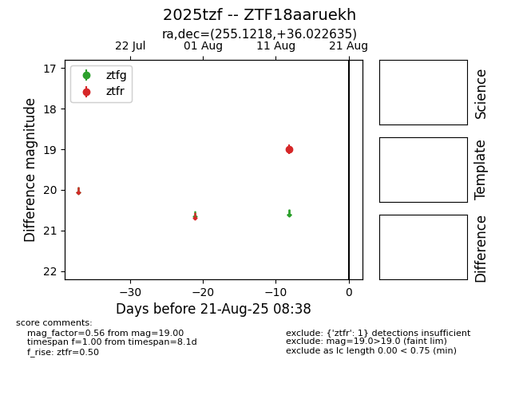

Target 2025tzf at 2025-08-21 09:29, see:
FINK: fink-portal.org/ZTF18aaruekh
Lasair: lasair-ztf.lsst.ac.uk/objects/ZTF18aaruekh
ALeRCE: alerce.online/object/ZTF18aaruekh
TNS: wis-tns.org/object/2025tzf
YSE: ziggy.ucolick.org/yse/transient_detail/2025tzf
alt names
ZTF18aaruekh (ztf,alerce)
2025tzf (tns,yse)
coordinates:
equatorial (ra, dec) = (255.1218,+36.02264)
galactic (l, b) = (59.1011,+37.09816)
photometry
last ztfr=19.00
1 ztfr detections
